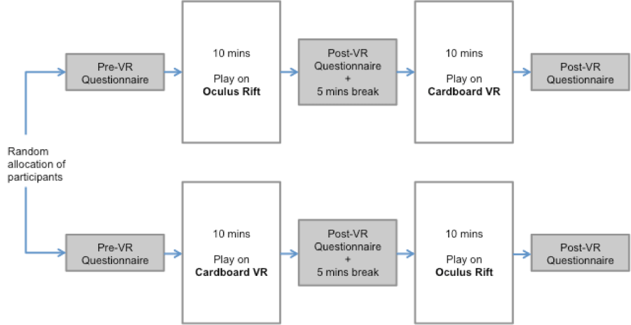
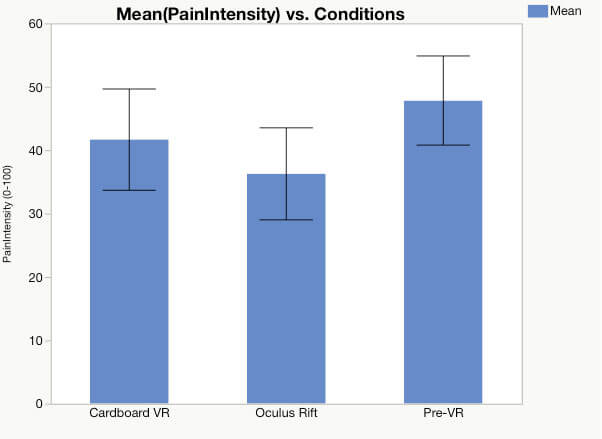

{% raw %}
<main class="ds-container">

  <nav class="breadcrumb" aria-label="Breadcrumb">
    <a href="research.html">Academic research</a>
    <span class="breadcrumb__sep">/</span>
    <span aria-current="page">Cardboard VR with chronic-pain patients</span>
  </nav>

  <header class="hero">
    <p class="h6 hero__kicker">Simon Fraser University &middot; 2016</p>
    <h1 class="display-l hero__title">Effectiveness of Cardboard VR with chronic-pain patients</h1>
  </header>

  <section class="section">
    <div class="prose">

      <p class="lead">At the <a href="https://painstudieslab.com/" target="_blank" rel="noopener">Pain Studies Lab</a> of Simon Fraser University, we mostly work on VR projects for pain patients. My research interest is affordable mobile VR and its use in pain distraction for chronic-pain patients. This study was conducted in September 2016.</p>

      <h2 class="h3">Experimental design</h2>
      <p class="body">This study used a repeated-measures design in which each patient played InMind on both Cardboard and Oculus Rift in a random order. A random uniform distribution ensured half of the participants used Cardboard first and the other half used Oculus first. The primary independent variable was the HMD type.</p>
      <p class="body">The primary dependent variable was retroactive pain intensity (PI). There are two kinds of PI &mdash; Present Pain Intensity and Retroactive Pain Intensity (pain felt in the last 10 minutes). I used the retroactive PI to measure patients' perceived pain intensity while inside the virtual environment. PI was measured three times: before playing the VR game; after playing on one HMD; and after playing again on the other HMD. Patients reported PI by filling out visual analog scale (VAS) questionnaires &mdash; one variation for the Pre-VR condition and another for the Post-VR condition. Immersion was a secondary dependent variable, captured through several questions on the VAS questionnaire.</p>
      <figure>
        <span class="frame"></span>
      </figure>

      <h2 class="h3">Results</h2>

      <h3 class="h5">Retroactive pain intensity</h3>
      <p class="body">Retroactive pain intensity measured the pain felt by participants during the last 10 minutes inside the VR world. A repeated-measures ANOVA revealed the retroactive pain intensity across the three conditions was statistically significant, F(2, 56) = 11.007, p&lt;0.05. Mauchly's test indicated the assumption of sphericity was not violated, &chi;<sup>2</sup>(2) = 3.842, p = 0.146. Effect size was medium, &omega;<sub>HMD</sub> = 0.5.</p>
      <p class="body">Bonferroni post hoc tests revealed a significant difference between the Pre-VR and Oculus Rift conditions, CI<sub>.95</sub> = &minus;17.773 (lower), &minus;4.027 (upper), p = 0.001. There was also a significant difference between the Pre-VR and Cardboard VR conditions, CI<sub>.95</sub> = &minus;11.516 (lower), &minus;0.151 (upper), p = 0.043. The difference in pain intensity between Oculus Rift and Cardboard VR was also significant, though only marginally, CI<sub>.95</sub> = &minus;10.131 (lower), &minus;4.027 (upper), p = 0.050. There was no significant interaction effect for the order of use of the HMDs, F(2, 56) = 0.348, p = 0.708.</p>
      <figure>
        <span class="frame"></span>
      </figure>

      <h3 class="h5">Present pain intensity</h3>
      <p class="body">A repeated-measures ANOVA revealed that exposure to VR had a significant effect on present pain intensity too, F(2, 58) = 5.090, p&lt;0.05. The assumption of sphericity was satisfied, &chi;<sup>2</sup>(2) = 0.606, p = 0.739. The effect size here was small, &omega;<sub>HMD</sub> = 0.3. This differs slightly from previous studies: an earlier within-subjects study of 20 participants comparing present and retroactive pain intensity between a VR (Oculus DK1) and an MBSR (Mindfulness-Based Stress Reduction) condition found the difference in present pain intensity was not significant. In this study, however, participants used two VR HMDs back-to-back. The pairwise comparison using Bonferroni post hoc analysis showed the difference between Pre-VR and Oculus Rift was significant, CI<sub>.95</sub> = &minus;11.11 (lower), &minus;0.889 (upper), p = 0.017. The difference between Pre-VR and Cardboard was not significant, CI<sub>.95</sub> = &minus;8.263 (lower), 1.263 (upper), p = 0.216.</p>

      <h3 class="h5">Immersion</h3>
      <p class="body">The difference in immersion levels between the two VR conditions was significant, F(1, 29) = 7.757, p = 0.009; effect size &omega;<sub>HMD</sub> = 0.42.</p>

      <div class="actions">
        <a href="research.html" class="btn btn--secondary">
          <svg viewBox="0 0 24 24" fill="none" stroke="currentColor" stroke-width="2" stroke-linecap="round" stroke-linejoin="round" aria-hidden="true"><path d="M19 12H5M11 18l-6-6 6-6"/></svg>
          Back to research
        </a>
      </div>

    </div>
  </section>

</main>
{% endraw %}
